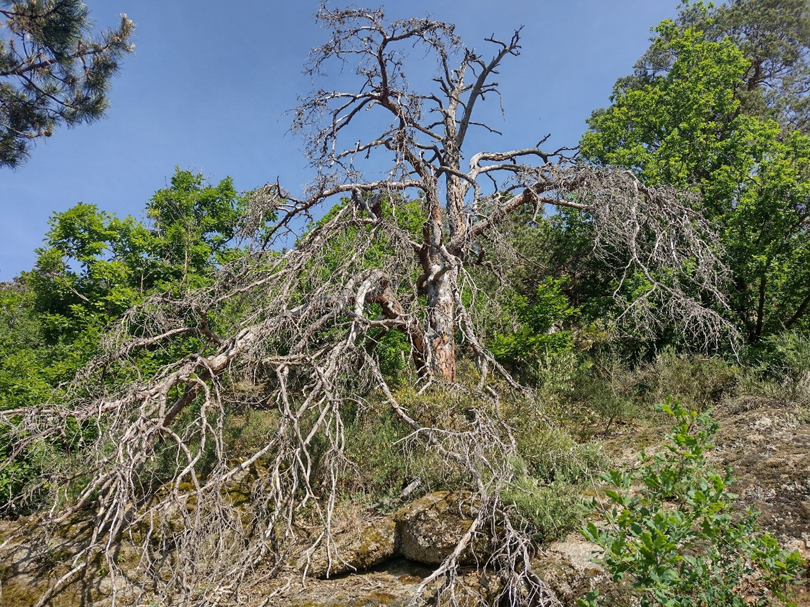

El cambio climático es uno de los mayores retos de nuestro tiempo. La provincia de Badajoz ya está experimentando impactos claros: incremento de temperaturas medias, sequías prolongadas, olas de calor o cambios en los patrones de lluvias. Estos fenómenos afectan de forma directa a sectores estratégicos como la agricultura, la ganadería, la gestión del agua y la salud de las personas.
Para dar respuesta, la Diputación de Badajoz impulsa el primer Plan Provincial de Adaptación al Cambio Climático, una herramienta estratégica y práctica con unas metas y objetivos ambiciosos.

Identificar riesgos y vulnerabilidades climáticas
Diseñar medidas de adaptación eficaces y realistas
Fortalecer la colaboración entre instituciones, ciudadanía y empresas
Establecer un sistema de seguimiento y mejora continua